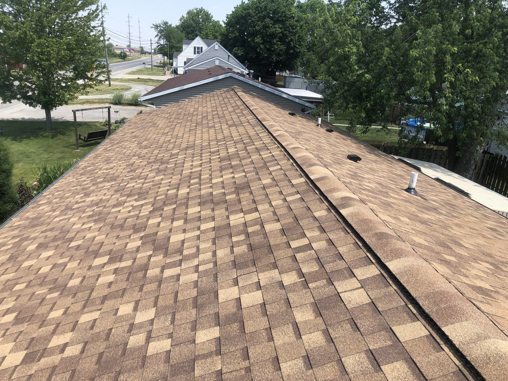
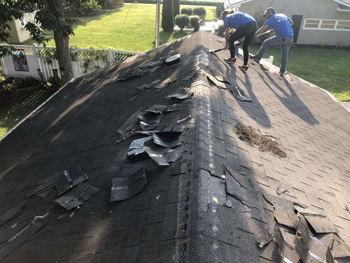
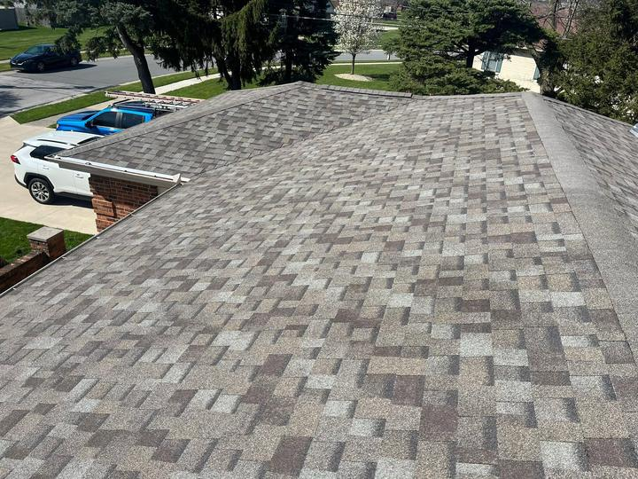
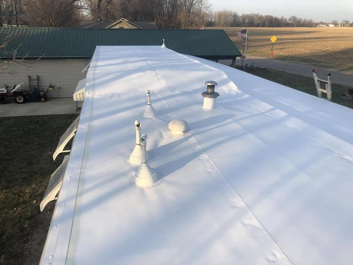
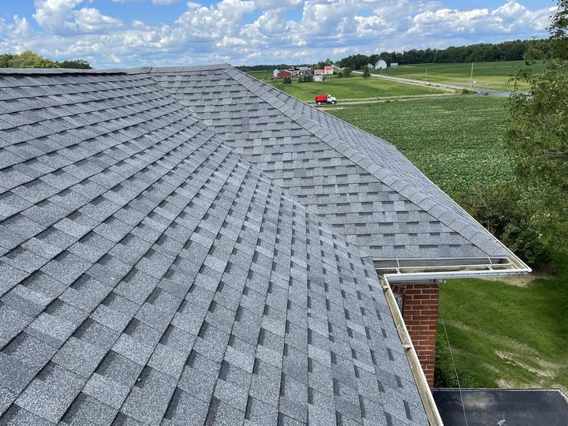
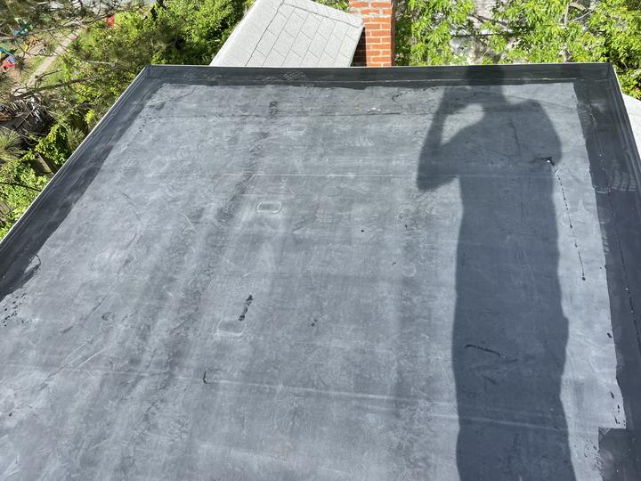
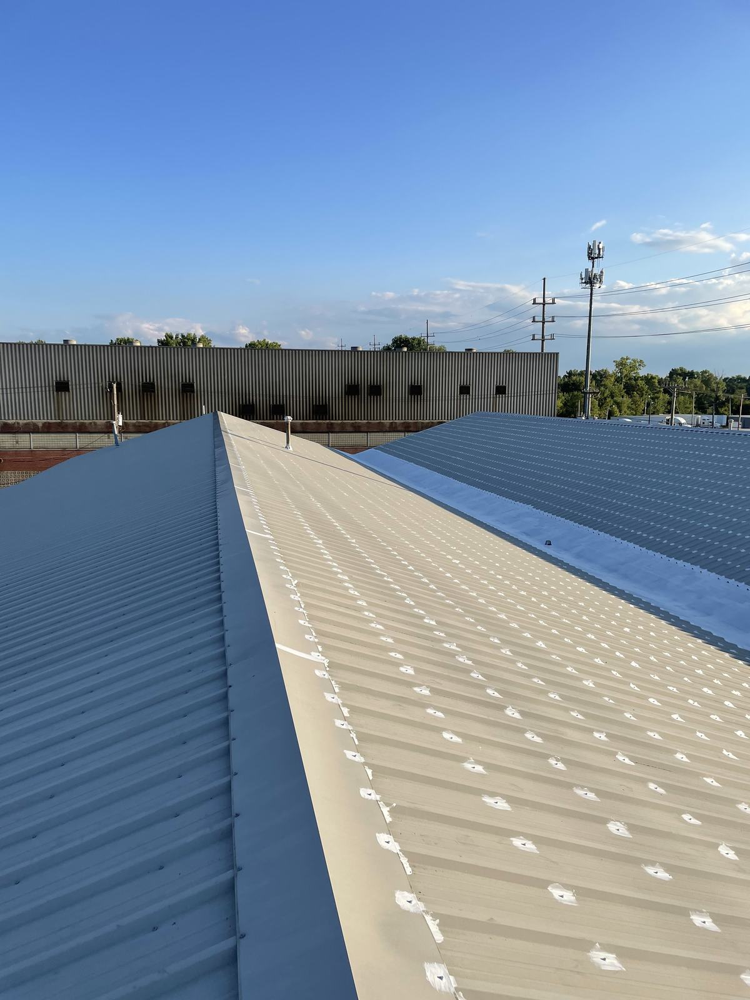
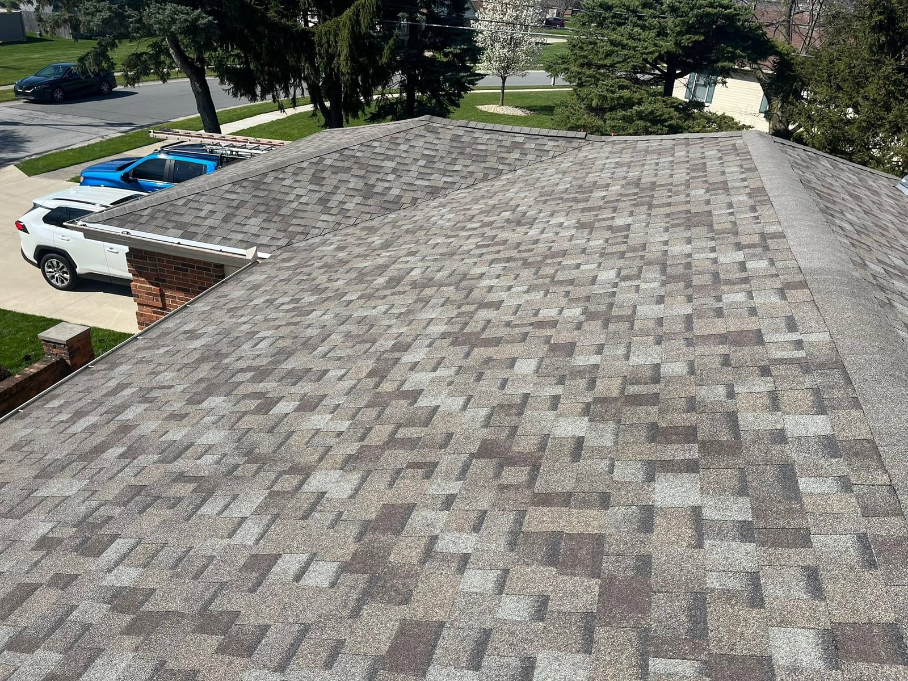
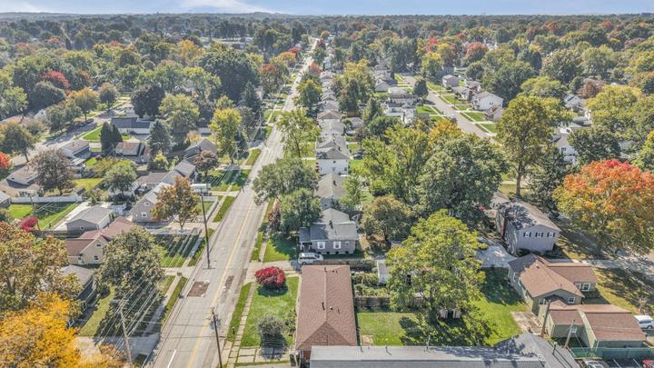

On Top Roofing, St Marys, Ohio


Start at the eave.
Finish on top.
Shingle re-roofs, white membrane and EPDM low-slope roofs, metal roofing and tear-offs, for homes and commercial buildings around St Marys and Grand Lake.
4.7 Google ratingShingle, membrane, metal.
Steep or low slope.
Commercial and residential. Every roof in this section is from On Top Roofing's own photos, taken on jobs around St Marys.
-

01Shingle re-roofs
Architectural shingles laid course by course, from the starter strip at the eave to the cap on the ridge.
-

02Low-slope roofs
White membrane and EPDM on flat and low-slope roofs, with the vents and pipe boots flashed in.
-
03
Metal roofing
Standing-seam metal panels for commercial buildings and homes, in the colors the building calls for.
-
04
Tear-offs
The old layers come off first, so the new roof goes onto a bare deck, not over a tired one.
-

05Commercial & residential
Farmhouses at the edge of the fields, homes in town, long low buildings for business. One crew, the same care on each.
Low slopeprofessionals!
Flat and nearly flat roofs don't shed water the way a steep shingle roof does, so they get a different roof: one continuous sheet of white membrane or black EPDM, sealed at every seam and flashed around every vent, pipe and curb.
“We strive to provide a quality experience and product.”
On Top Roofing

A roof goes on
from the bottom up.
How a shingle re-roof comes together, layer by layer. The last piece goes on top.
Deck
With the old roof torn off, the bare deck is in plain view before anything covers it.
Underlayment
A layer rolled over the deck, lapped course over course, under everything that follows.
Starter strip
The first row at the eave, so the first course has a sealed edge to sit on.
Courses
Shingles go on in rows, each one lapping the one below, working up the roof.
Chalk lines
Lines snapped across the roof keep every course straight from rake to rake.
Ridge cap
The last piece. It goes on top.
Roofs we finished.
Seen from on top.
Seven photos from On Top Roofing's Google listing and Facebook page: shingle, membrane, EPDM, metal and a tear-off in progress.
Grey architectural A hip roof on the edge of the fields 
Standing seam Blue and tan metal EPDM Flat roof, finished edges Tan architectural Ridge vent along the top White membrane Low slope, long run 
Re-roof Finished, street side Tear-off Day one, at the ridge
Roofs around Grand Lake St. Marys
Based in St Marys, Ohio 45885, in Auglaize County on the east end of Grand Lake St. Marys. Homes, farms and commercial buildings across this flat, wide-open corner of west-central Ohio, where the wind comes across the fields with nothing to stop it.
- St Marys, OH 45885
- Auglaize County
- West-central Ohio

What's on top
of your building?
Shingle, flat, metal or a tear-off: call or text with the address and what you're seeing, or send the details in the form.
Call or text(567) 279-3430- Text(567) 279-3430
- Emailontoproofing21@gmail.com
- FacebookOn Top Roofing
- Google4.7 ★ rating
- Based inSt Marys, OH 45885
Short answers,
straight lines.
Do you work on flat roofs?
Yes. Low-slope roofs are a specialty: white membrane and EPDM, on homes, porches, additions and long commercial buildings.
Commercial or residential?
Both. The photos on this page include houses in town, a farmhouse by the fields, and commercial buildings with membrane and standing-seam metal roofs.
Do you do tear-offs?
Yes. Old shingles come off down to the deck before the new roof goes on.
Where are you based?
St Marys, Ohio 45885, on Grand Lake St. Marys in Auglaize County. Call or text to check your address.
What should I send for a quote?
Your name, phone, the town and a line about the roof: shingle, flat or metal, and what you're seeing. Photos help; you can text them.